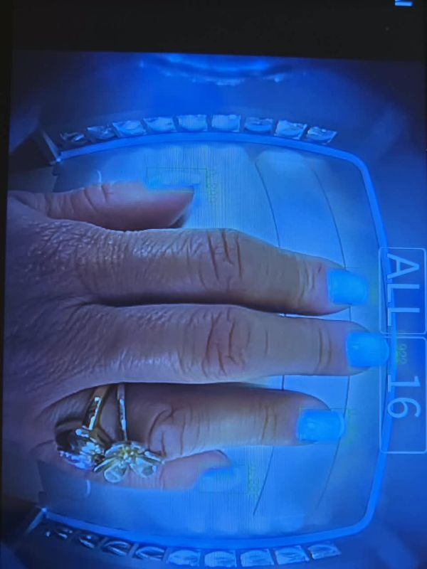
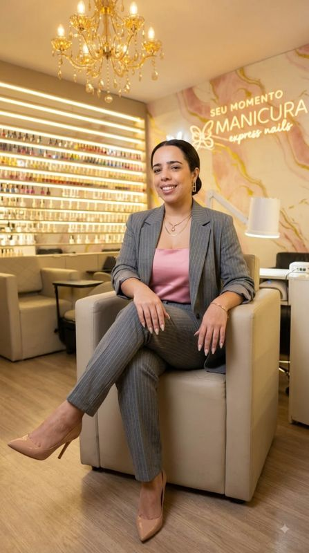
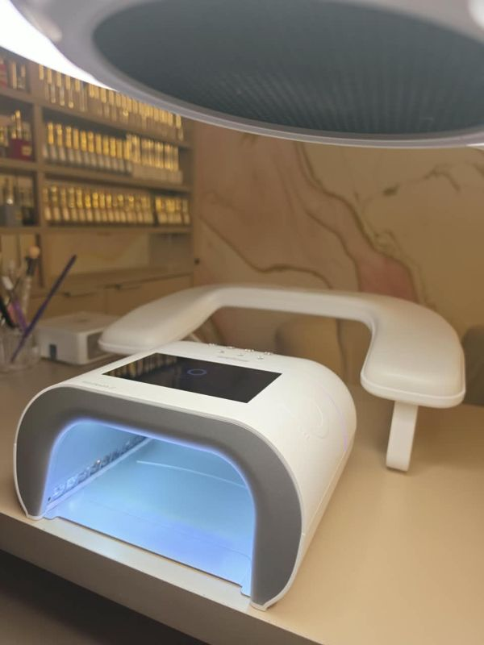
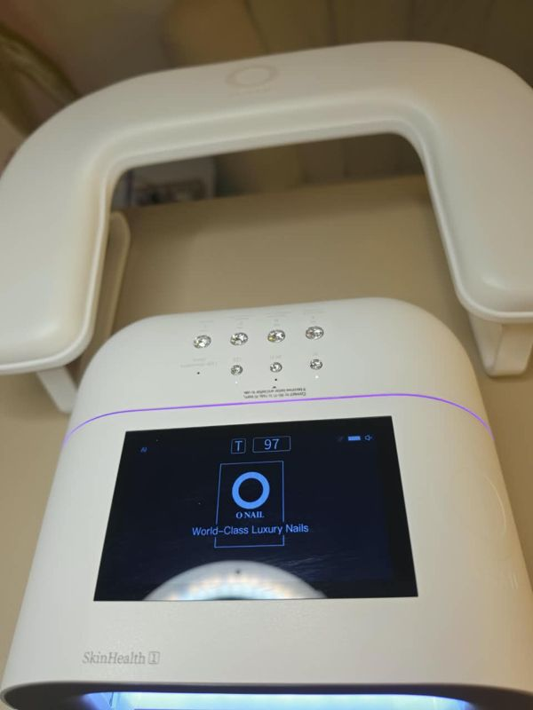
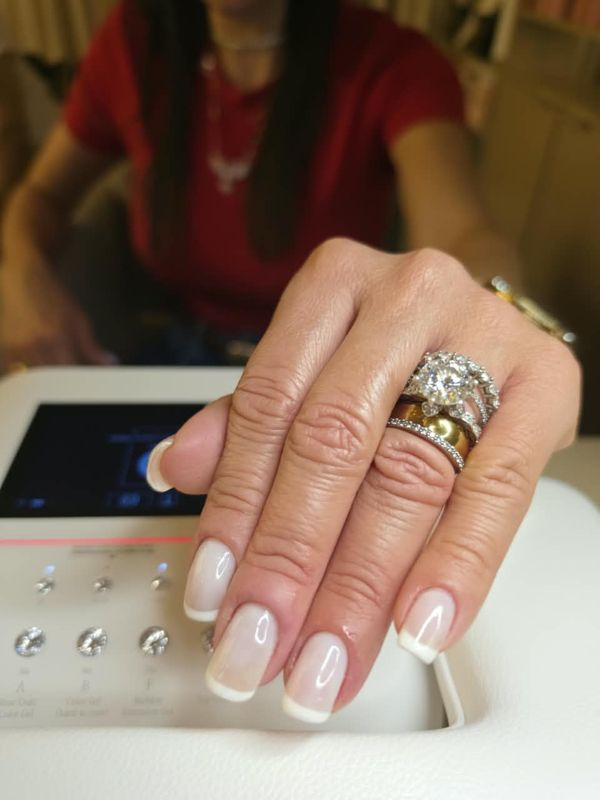
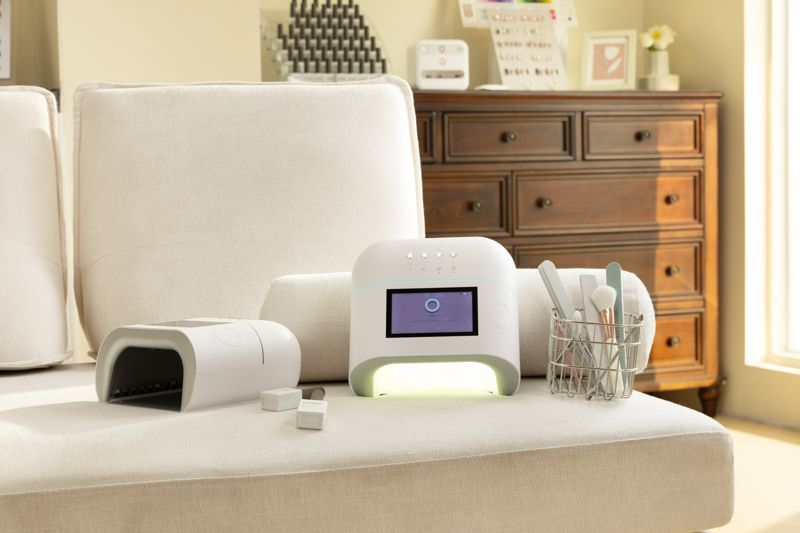
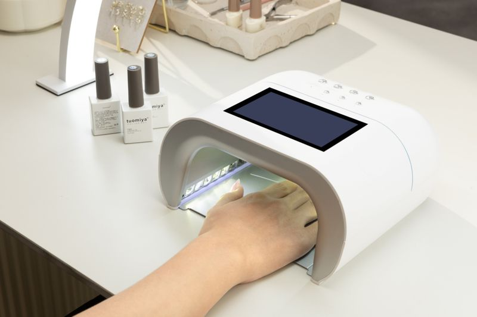
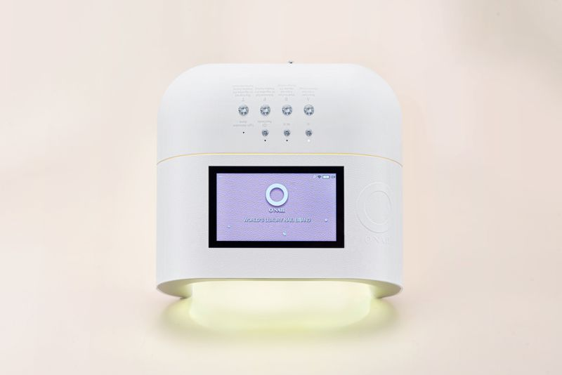

Imprensa
Jundiaí recebe a primeira cabine de unhas com inteligência artificial
O estúdio Manicura Express Nails, no Anhangabaú, trouxe para Jundiaí a primeira cabine japonesa O NAIL com inteligência artificial, que acende a luz de secagem do gel só sobre as unhas. Abaixo, informações, fotos em alta e vídeos para jornalistas.
O que chegou a Jundiaí?
O estúdio Manicura Express Nails, no bairro Anhangabaú, trouxe para Jundiaí a primeira cabine japonesa O NAIL com inteligência artificial. A IA reconhece cada unha e acende a luz de secagem do gel só sobre ela, poupando a pele das mãos da exposição à luz.
A novidade chega junto com um cuidado que ganhou importância depois que a Anvisa proibiu o TPO em esmaltes em gel: o estúdio usa apenas géis livres de TPO e DMPT e esteriliza os instrumentos em autoclave, o mesmo método dos hospitais. O kit é aberto na frente da cliente.
À frente do estúdio está Nayara Santos, manicure desde 2015, que concluiu em 2026 formações técnicas em química de produtos para unhas, dermatite de contato e prevenção de descolamentos. Ela está à disposição para entrevista e demonstração da cabine no estúdio.
Quais são os fatos principais?
- O quê: primeira cabine O NAIL com inteligência artificial de Jundiaí.
- Como funciona: a IA identifica as unhas e ilumina só elas durante a secagem do gel.
- Segurança: géis sem TPO e DMPT; instrumentos esterilizados em autoclave; kit aberto na frente da cliente.
- Quem: Nayara Santos, manicure desde 2015. Estúdio aberto em 2021.
- Onde: Av. Comandante Videlmo Munhoz, 91, Sala 3, Anhangabaú, Jundiaí/SP.
- Mais detalhes: página da cabine O NAIL e protocolo de biossegurança.
Onde baixar as fotos em alta resolução?
















Há vídeos da cabine funcionando?
Perguntas frequentes
O que é a cabine O NAIL com inteligência artificial?
É uma cabine japonesa de secagem do esmalte em gel em que uma inteligência artificial reconhece cada unha e acende a luz só sobre ela, reduzindo a exposição da pele das mãos à luz.
Onde fica a primeira cabine de unhas com IA de Jundiaí?
No estúdio Manicura Express Nails, na Av. Comandante Videlmo Munhoz, 91, Sala 3, no bairro Anhangabaú, em Jundiaí/SP.
A cabine com IA substitui os cuidados de biossegurança?
Não. Ela se soma a eles: no Manicura Express Nails os géis são livres de TPO e DMPT e os instrumentos são esterilizados em autoclave, o mesmo método dos hospitais, com o kit aberto na frente da cliente.
A imprensa pode usar as fotos e os vídeos?
Sim. As fotos e os vídeos desta página têm uso livre em reportagens, com o crédito indicado em cada arquivo (Divulgação/Manicura Express Nails ou Divulgação/O NAIL).
Como agendar uma entrevista ou gravação no estúdio?
Pelo WhatsApp (11) 95996-3541 ou pelo e-mail contato@manicuraexpressnails.com, com Nayara Santos. Recebemos equipes de reportagem com horário combinado.
Como falar com a imprensa do estúdio?
Nayara Santos · WhatsApp (11) 95996-3541 · contato@manicuraexpressnails.com
Recebemos equipes de reportagem no estúdio para gravar a cabine em funcionamento, com horário combinado.
Saiba mais sobre a Nayara, a cabine O NAIL, a biossegurança, o artigo cabine de unha faz mal?, os serviços e o blog.